此前缺失判定未完整验证客户端加载链，不能作为最终结论。查看复核说明
先按怪物种类判断可否复用，再选等级变体和属性配色。所有图片为解包贴图图集，可点击放大；不是怪物3D渲染。覆盖原缺口表全部209项直接引用，含非lv特殊变体及Boss，按名称族归类；不含动作、效果和书本等间接依赖缺口。属性颜色方向暂按名称推测，图像为实际证据。
| 种类 | 至少一种模型 | 模型等级 | 贴图等级 | 缺失引用数 | 现存模型名 | 现存贴图与外观 | 本类全部缺失引用 |
|---|---|---|---|---|---|---|---|
| 熊 / bear | 有 | 3 | 3 | 15 | ast_ms01_bear_lv3 | ms01_bear_lv3_dark 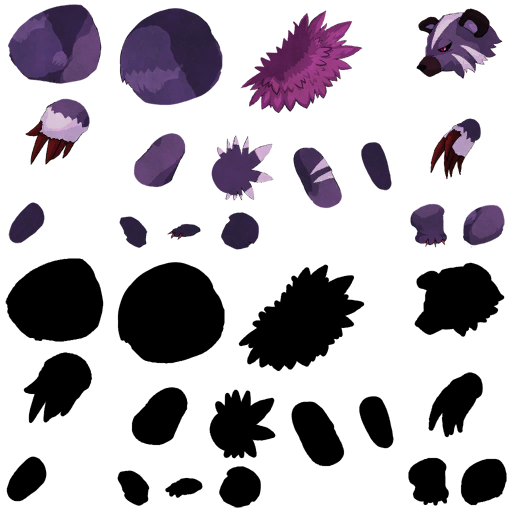 ms01_bear_lv3_fire 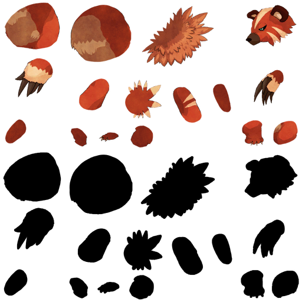 ms01_bear_lv3_holy 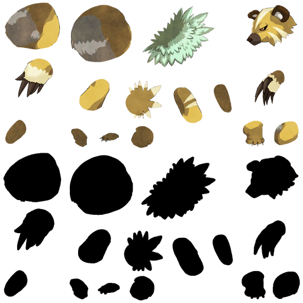 ms01_bear_lv3_water 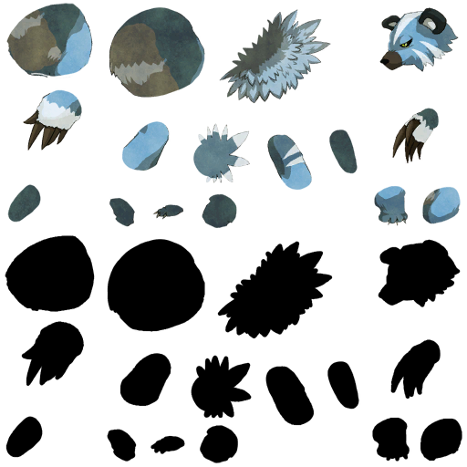 | ms01_bear_lv1 ms01_bear_lv1_dark ms01_bear_lv1_fire ms01_bear_lv1_holy ms01_bear_lv1_water ms01_bear_lv2 ms01_bear_lv2_dark ms01_bear_lv2_fire ms01_bear_lv2_holy ms01_bear_lv2_water ms01_bear_lv4 ms01_bear_lv4_dark ms01_bear_lv4_fire ms01_bear_lv4_holy ms01_bear_lv4_water |
| 鸟类 / bird | 无 | 无 | 无 | 8 | 无 | 无已提取图像 | ms01_bird_lv1_dark ms01_bird_lv1_fire ms01_bird_lv1_holy ms01_bird_lv1_water ms01_bird_lv2_dark ms01_bird_lv2_fire ms01_bird_lv2_holy ms01_bird_lv2_water |
| 蟹类 / crab | 无 | 无 | 无 | 8 | 无 | 无已提取图像 | ms01_crab_lv1_dark ms01_crab_lv1_fire ms01_crab_lv1_holy ms01_crab_lv1_water ms01_crab_lv2_dark ms01_crab_lv2_fire ms01_crab_lv2_holy ms01_crab_lv2_water |
| death 类 / death | 有 | 非lv变体 | 非lv变体 | 2 | ast_ms00_death_01 | ms00_death_01 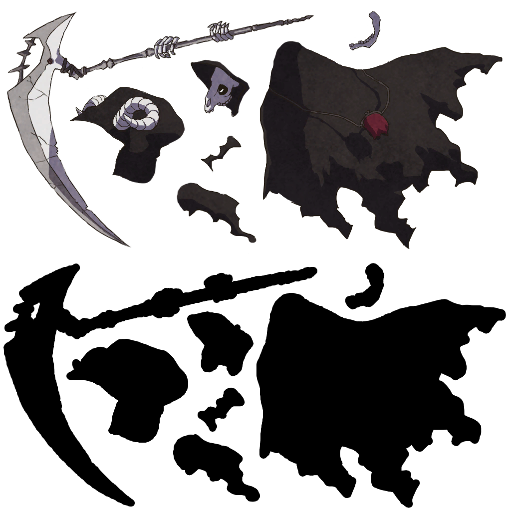 | ms00_death_01_zako ms00_death_shadow |
| 龙（名称推测） / dra | 有 | 4、非lv变体 | 4、非lv变体 | 32 | ast_ms01_dra_lv4；ms02_dra_un_01 | ms01_dra_lv4_dark 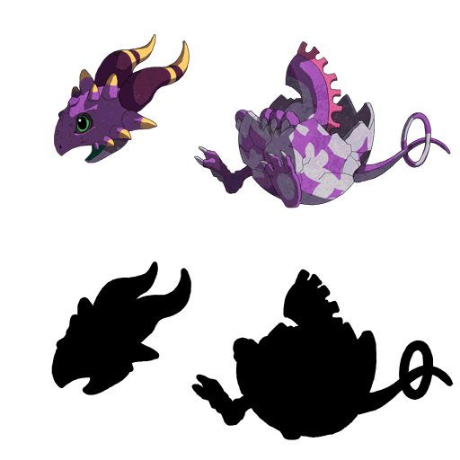 ms01_dra_lv4_fire 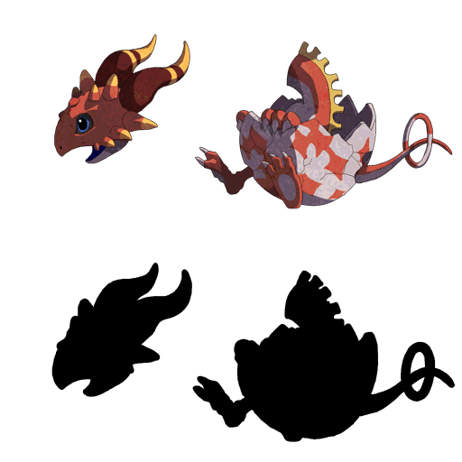 ms01_dra_lv4_holy 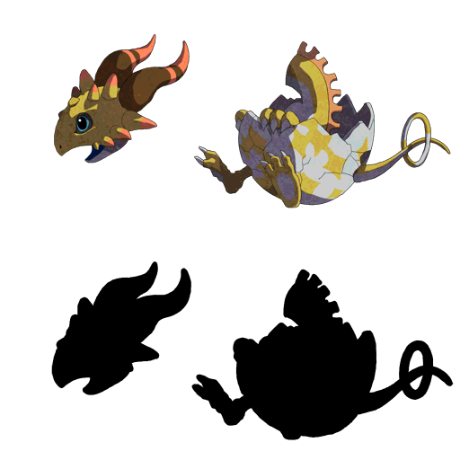 ms01_dra_lv4_water 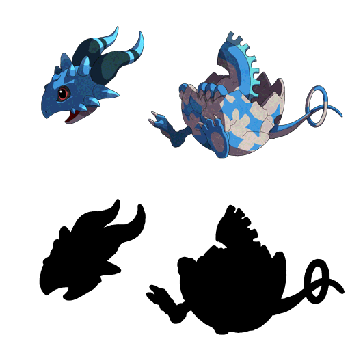 ms02_dra_un_01 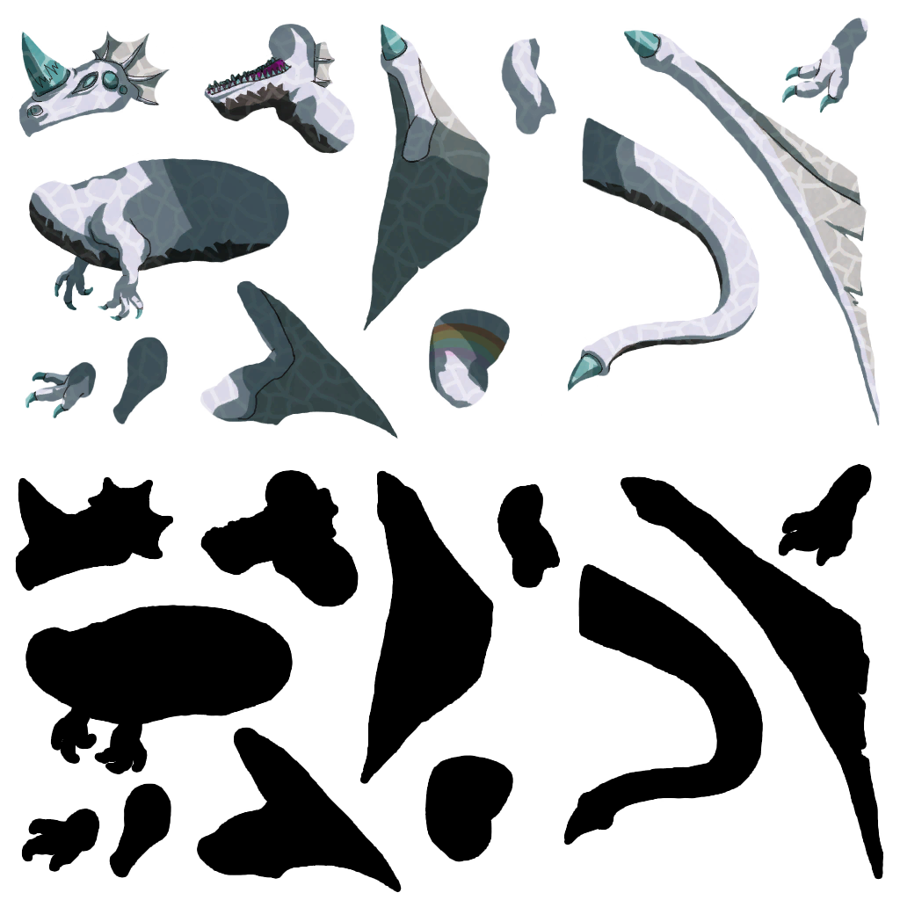 | ms01_dra_lv1 ms01_dra_lv1_dark ms01_dra_lv1_fire ms01_dra_lv1_holy ms01_dra_lv1_water ms01_dra_lv2 ms01_dra_lv2_dark ms01_dra_lv2_fire ms01_dra_lv2_holy ms01_dra_lv2_water ms01_dra_lv3 ms01_dra_lv3_dark ms01_dra_lv3_fire ms01_dra_lv3_holy ms01_dra_lv3_water ms01_dra_sh_fire ms02_dra_dark_01 ms02_dra_fire_01 ms02_dra_holy_01 ms02_dra_un_02 ms02_dra_un_04 ms02_dra_water_01 ms03_dra_dark_01 ms03_dra_dark_04 ms03_dra_fire_01 ms03_dra_fire_04 ms03_dra_holy_01 ms03_dra_holy_04 ms03_dra_un_01 ms03_dra_un_02 ms03_dra_water_01 ms03_dra_water_04 |
| 鱼类 / fish | 无 | 无 | 无 | 3 | 无 | 无已提取图像 | ms01_fish_dark ms01_fish_fire ms01_fish_un |
| fly 类 / fly | 无 | 无 | 无 | 7 | 无 | 无已提取图像 | ms03_fly_dark_01 ms03_fly_fire_01 ms03_fly_holy_01 ms03_fly_un_01 ms03_fly_un_02 ms03_fly_un_03 ms03_fly_water_01 |
| four 类 / four | 有 | 非lv变体 | 非lv变体 | 19 | ast_ms02_four_un_01_zako；ast_ms03_four_un_02；ms02_four_un_01 | ms02_four_un_01 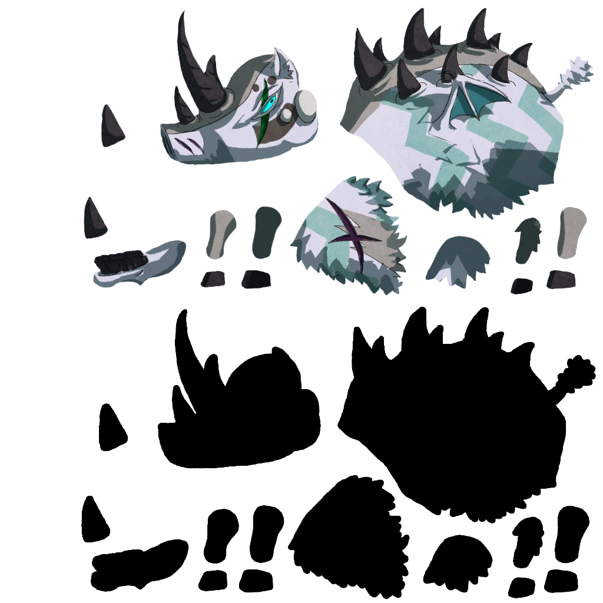 ms03_four_un_02 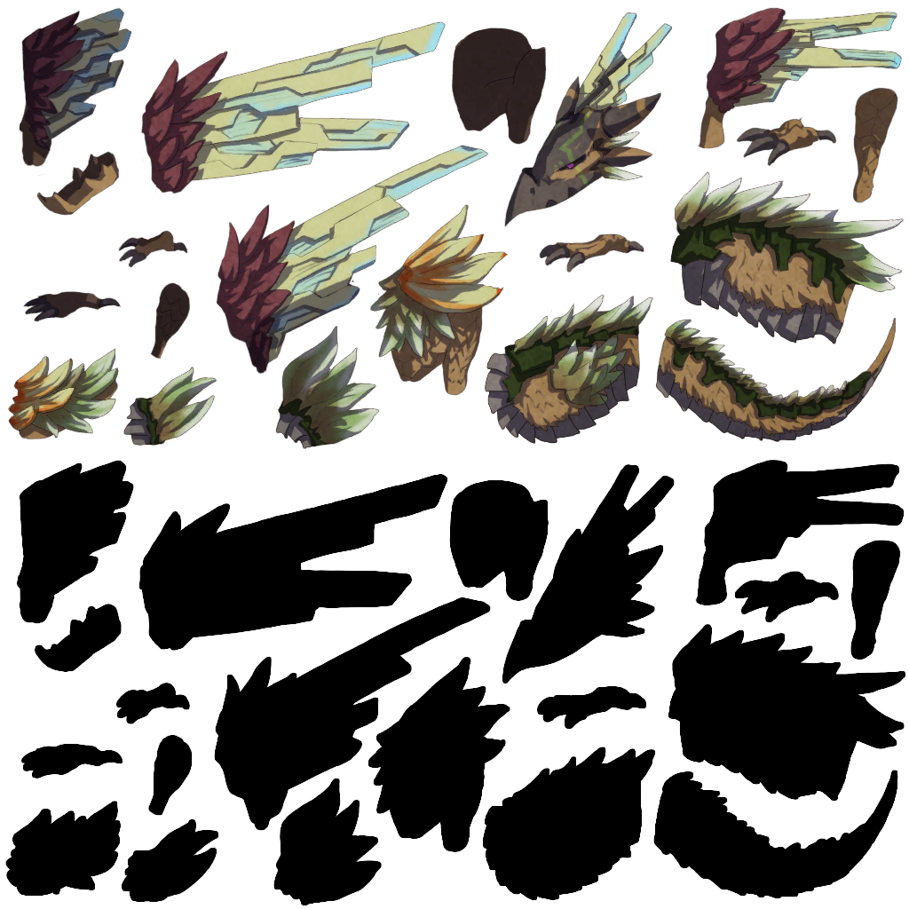 | ms02_four_dark_01 ms02_four_dark_01_zako ms02_four_dark_05 ms02_four_fire_01 ms02_four_fire_01_zako ms02_four_fire_05 ms02_four_holy_01 ms02_four_holy_01_zako ms02_four_un_02 ms02_four_un_05 ms02_four_water_01 ms02_four_water_01_zako ms02_four_water_05 ms03_four_dark_01 ms03_four_fire_01 ms03_four_holy_01 ms03_four_un_01 ms03_four_un_03 ms03_four_water_01 |
| 河豚类 / fugu | 无 | 无 | 无 | 6 | 无 | 无已提取图像 | ms01_fugu_lv1_dark ms01_fugu_lv1_fire ms01_fugu_lv1_water ms01_fugu_lv2_dark ms01_fugu_lv2_fire ms01_fugu_lv2_water |
| 石像/魔像 / golem | 无 | 无 | 无 | 5 | 无 | 无已提取图像 | ms01_golem_dark ms01_golem_fire ms01_golem_holy ms01_golem_un ms01_golem_water |
| legend 类 / legend | 无 | 无 | 无 | 1 | 无 | 无已提取图像 | ms04_legend_01 |
| mind 类 / mind | 无 | 无 | 无 | 5 | 无 | 无已提取图像 | ms01_mind_dark ms01_mind_fire ms01_mind_holy ms01_mind_water ms03_mind_01 |
| 章鱼类 / oct | 无 | 无 | 无 | 3 | 无 | 无已提取图像 | ms03_oct_dark_01 ms03_oct_fire_01 ms03_oct_un_01 |
| 蝎类（名称推测） / sco | 无 | 无 | 无 | 24 | 无 | 无已提取图像 | ms01_sco_lv1 ms01_sco_lv1_dark ms01_sco_lv1_fire ms01_sco_lv1_holy ms01_sco_lv1_water ms01_sco_lv2 ms01_sco_lv2_dark ms01_sco_lv2_fire ms01_sco_lv2_holy ms01_sco_lv2_water ms01_sco_lv3 ms01_sco_lv3_dark ms01_sco_lv3_fire ms01_sco_lv3_holy ms01_sco_lv3_water ms01_sco_lv4 ms01_sco_lv4_dark ms01_sco_lv4_fire ms01_sco_lv4_holy ms01_sco_lv4_water ms01_sco_sh_dark ms01_sco_sh_fire ms01_sco_sh_holy ms01_sco_sh_water |
| 史莱姆 / sla | 有 | 1、4 | 1、4 | 22 | ast_ms01_sla_lv1_gold；ast_ms01_sla_lv4_gold；ms01_sla_lv1 | ms01_sla_lv1_dark ms01_sla_lv1_fire ms01_sla_lv1_gold ms01_sla_lv1_holy ms01_sla_lv1_water ms01_sla_lv4_gold | ms01_sla_lv1_silver ms01_sla_lv2 ms01_sla_lv2_dark ms01_sla_lv2_fire ms01_sla_lv2_gold ms01_sla_lv2_holy ms01_sla_lv2_silver ms01_sla_lv2_water ms01_sla_lv3 ms01_sla_lv3_dark ms01_sla_lv3_fire ms01_sla_lv3_gold ms01_sla_lv3_holy ms01_sla_lv3_silver ms01_sla_lv3_water ms01_sla_lv4 ms01_sla_lv4_dark ms01_sla_lv4_fire ms01_sla_lv4_holy ms01_sla_lv4_silver ms01_sla_lv4_water ms01_sla_sh_water |
| squ 类（具体种类待确认） / squ | 有 | 1 | 1 | 19 | ms01_squ_lv1 | ms01_squ_lv1_dark 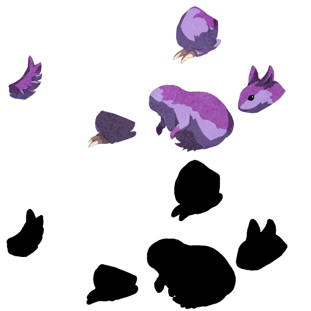 ms01_squ_lv1_fire 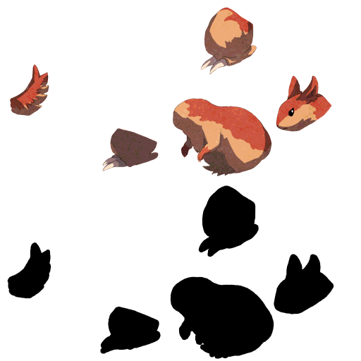 ms01_squ_lv1_holy 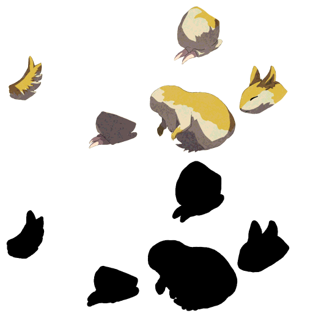 ms01_squ_lv1_water 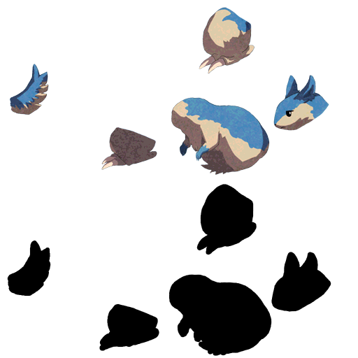 | ms01_squ_lv2 ms01_squ_lv2_dark ms01_squ_lv2_fire ms01_squ_lv2_holy ms01_squ_lv2_water ms01_squ_lv3 ms01_squ_lv3_dark ms01_squ_lv3_fire ms01_squ_lv3_holy ms01_squ_lv3_water ms01_squ_lv4 ms01_squ_lv4_dark ms01_squ_lv4_fire ms01_squ_lv4_holy ms01_squ_lv4_water ms01_squ_sh_dark ms01_squ_sh_fire ms01_squ_sh_holy ms01_squ_sh_water |
| tatu 类 / tatu | 无 | 无 | 无 | 6 | 无 | 无已提取图像 | ms01_tatu_lv1_dark ms01_tatu_lv1_fire ms01_tatu_lv1_water ms01_tatu_lv2_dark ms01_tatu_lv2_fire ms01_tatu_lv2_water |
| 狼 / wolf | 无 | 无 | 无 | 24 | 无 | 无已提取图像 | ms01_wolf_lv1 ms01_wolf_lv1_dark ms01_wolf_lv1_fire ms01_wolf_lv1_holy ms01_wolf_lv1_water ms01_wolf_lv2 ms01_wolf_lv2_dark ms01_wolf_lv2_fire ms01_wolf_lv2_holy ms01_wolf_lv2_water ms01_wolf_lv3 ms01_wolf_lv3_dark ms01_wolf_lv3_fire ms01_wolf_lv3_holy ms01_wolf_lv3_water ms01_wolf_lv4 ms01_wolf_lv4_dark ms01_wolf_lv4_fire ms01_wolf_lv4_holy ms01_wolf_lv4_water ms01_wolf_sh_dark ms01_wolf_sh_fire ms01_wolf_sh_holy ms01_wolf_sh_water |
复用顺序建议：同种类同属性且有配套模型/贴图 → 同种类异属性重新配色 → 无同种类模型则补模或明确采用异类占位。模型与贴图应配套核对UV；等级不能仅凭名称视为大小不同。